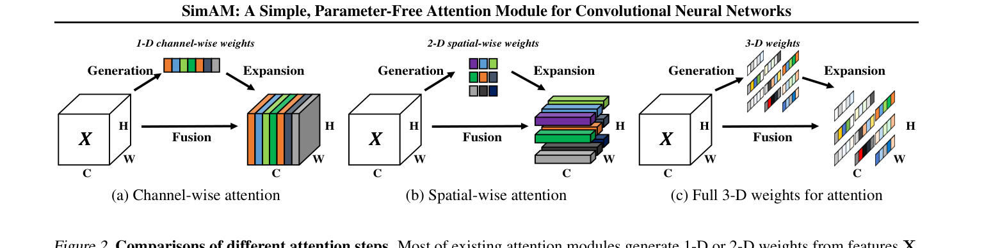
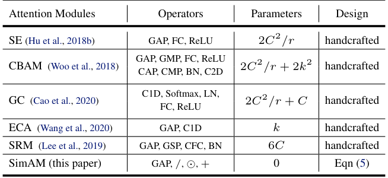
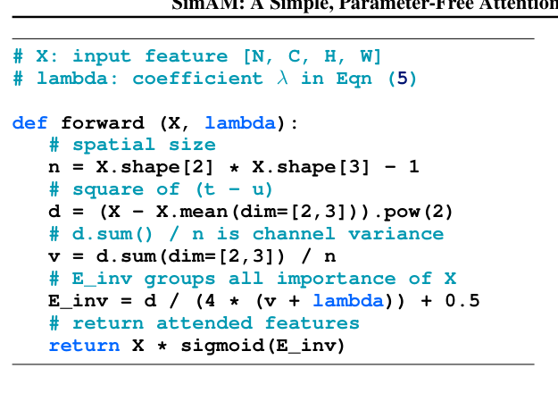
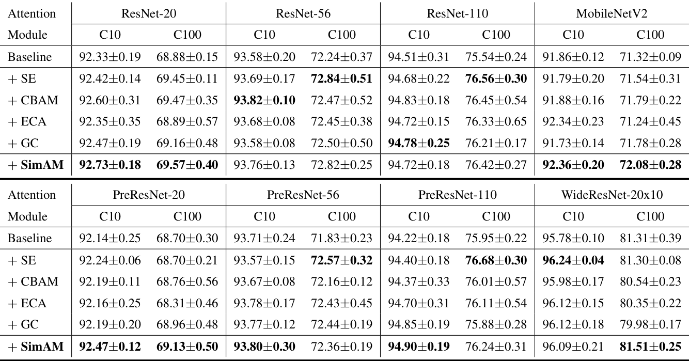
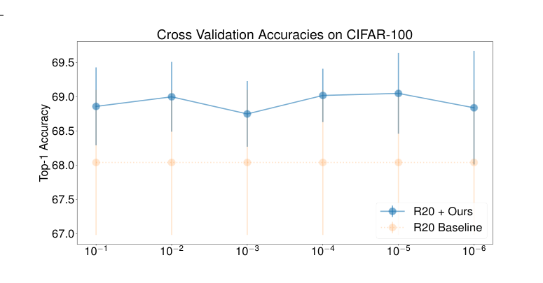
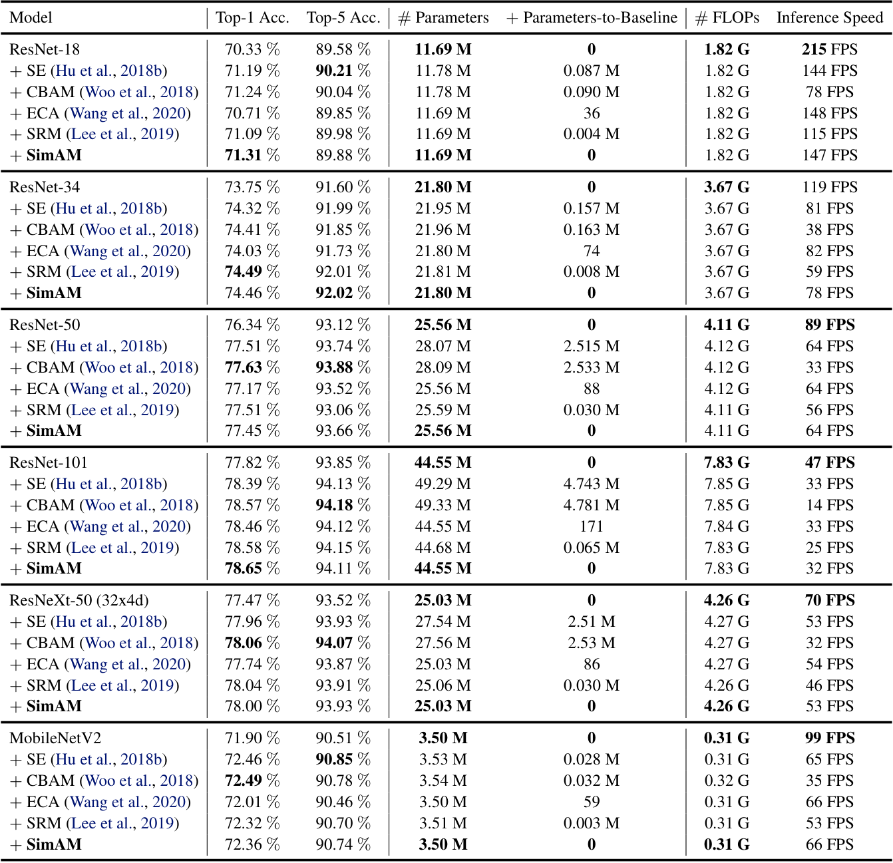
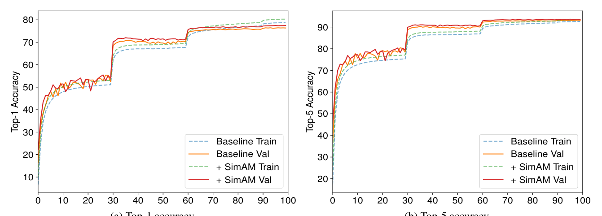
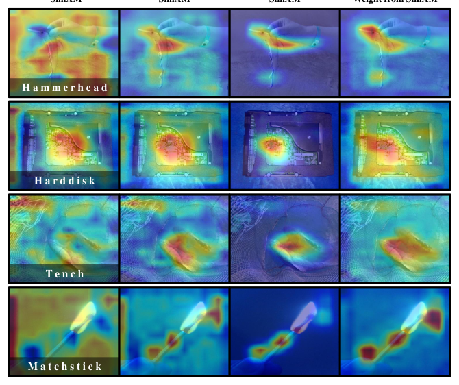
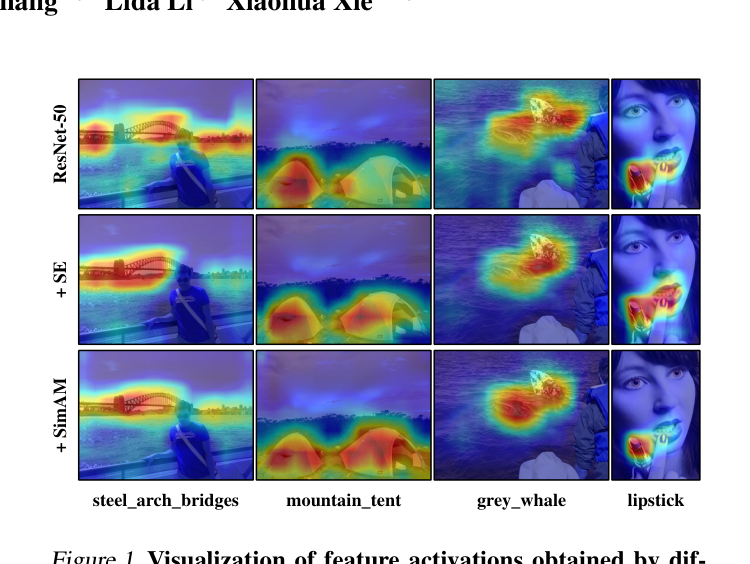
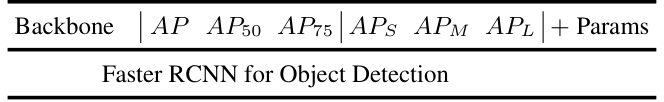

基于神经科学理论推断 3-D 注意力权重的零参数注意力模块——为每个神经元求解能量函数，不给网络增加任何参数。
受大脑空间抑制理论启发，以目标神经元与同通道其余神经元的线性可分性定义能量函数，直接推断 3-D 注意力权重。
推导能量函数关于权重与偏置的闭式解，免去代价高昂的迭代求解，以极低开销得到全部神经元的重要性。
整个模块以不到十行代码实现，零参数插入现有网络并施加 3-D 加权精炼，在精度、模型规模与速度上全面验证。
实验表明：SimAM 在图像分类、目标检测与实例分割上，以不增加任何参数的代价取得与流行注意力模块相当甚至更优的表现。
堆叠卷积、残差单元、密集连接是最具代表性的工作，已广泛应用于现有架构。但设计这样的 block 需要丰富的专家知识与大量时间，由此催生了 AutoML 等自动搜索策略。
代表工作 SE 在 block 内部精炼卷积输出，捕获任务相关特征并抑制背景激活。模块独立于网络架构，可插入 VGG、ResNets、ResNeXts 等多种网络，甚至进入 AutoML 流程参与结构搜索。
注意力模块不依赖特定架构、可自由插拔，成为提升 ConvNet 表征能力的通用手段——但其设计本身仍有明显局限。
研究空白：暂未有工作从统一的神经计算原理出发，同时解决 3-D 权重推断与免手工结构设计这两个瓶颈。


et(wt, bt, y, xi) = (yt − t̂)2 + 1M−1 M−1∑i=1 (yo − x̂i)2
其中 t 为目标神经元，xi 为同一通道内的其他神经元，M = H × W 为该通道神经元总数； t̂ = wtt + bt、x̂i = wtxi + bt 是线性变换，yt 与 yo 是两个不同的标签。 最小化它等价于寻找目标神经元与同通道其余神经元的线性可分性。
et(wt, bt, y, xi) = 1M−1 M−1∑i=1 (−1 − (wtxi + bt))2 + (1 − (wtt + bt))2 + λwt2
其中 λ 是正则系数，用于约束变换权重 wt 的幅度。
wt = − 2(t − μt)(t − μt)2 + 2σt2 + 2λ， bt = − 12 (t + μt)wt
其中 μt 与 σt2 是该通道内除 t 之外所有神经元计算的均值与方差。 基于同通道像素服从同一分布的假设，均值与方差可在整个通道上计算一次并供所有神经元复用。
et* = 4(σ̂2 + λ)(t − μ̂)2 + 2σ̂2 + 2λ μ̂、σ̂² 基于全部 M 个神经元计算
能量 et* 越低，神经元与周围区分度越大、越重要，因此重要性直接取 1/et*——闭式解把逐神经元求解压缩为逐通道统计，是模块无需参数与训练的直接原因。
取值 [3, 1, 1, 1]，正则系数取 CIFAR 实验采用的 λ = 10−4
σ̂² = 0.75，代入式 (5)
与周围差异大，能量低
与周围相似，能量高
可以看到，与周围差异大的神经元能量更低、重要性 1/e* 更高——这正是空间抑制理论的量化体现。
X̃ = sigmoid(1/E) ⊙ X
其中 E 把所有神经元的 et* 沿通道与空间维度聚合而成，⊙ 为逐元素乘法。








从空间抑制理论出发，把注意力权重生成形式化为能量函数最小化并推导闭式解，让通道与空间注意力在全 3-D 权重下自然统一，无需手工结构调优。
闭式解让模块在 ImageNet 上零参数超越基线（ResNet-18 Top-1 71.31%），推理速度与 SE、ECA 相当，精度-效率权衡极具吸引力。
覆盖 CIFAR 8 种架构、ImageNet 6 种模型与 COCO 检测、分割任务，从精度、参数、速度三个维度对比，并辅以 Grad-CAM 可视化支撑。